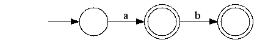

记得Long long ago，在找一个Vim的括号匹配问题的时候，看到一个说法，说括号是不可正则的。当时也没去深究，就只是记下了这个说法。最近，Coursera开了一门Automata的课程，就去听了下，里面也说到括号是不正则的，没有给出证明。因此就引出了我的好奇心了。
Coursera上课，选课的时候挺兴奋的，但是往往听了几节之后，就觉得坚持不下去了。我还是喜欢需求驱动的学习，就像现在这样，我为了弄明白为什么括号是不可正则的，到优酷上听了一个可计算理论和有限自动机的课程，里面给出了括号为什么是不可正则的证明。然后我还买了一本书，《自动机理论、语言和计算导论》。
证明为什么括号是不可正则的，用泵引理就行了。但是，如果学习就止步于此，那估计一辈子也就没有什么成就了。我现在对自动机理论还有非常多不明白的东西，把括号为什么不可正则这个问题解决了之后，听课看书顿时就失去了目标，突然又无聊了。
很多事情，是很难靠内在驱动去做的。能靠人内在去驱动的事情，往往都是和生存生育有关的。而学习这种东西，说实在的，没有某种激励驱动真的很难坚持下去。
所以，我就写博客了。就像两年前，我把学习Semantic Web的过程用博客记录下来一样。这次我也想把我学习自动机理论的过程写下来。
我写博客的习惯，一直都在假想一个小白看我的文章，要怎么样才能说得让他看完我的博客就能明白我讲解的知识点。这样对自己要求就很高了，除了文字表述的功力上，还要求你自己就得对这个知识点弄得非常明白。但就是这个过程，能让你掌握一个知识点。
由于自动机理论相当庞大，而且挺难的，我这才开始学习，想来挺久该从哪里入手写起。后来想想，干脆就直接从泵引理开始吧。
-------- 万恶的分割线 -----------
写着写着，想到自动机理论涉及很多的数学公式和图表，Markdown好像不支持。然后就去找了好多工具，pandoc，ASCIIDoc等，然后还用RStudio和Knitr，发现这个工具挺好的。最后的最后，发现Mou本身就支持数学公式和表格，真是浪费了一晚的时间啊。
-------- 结束 --------------
首先，我们要弄清楚什么是正则语言。这也涉及相当多的知识点，以后写博客慢慢说吧。直接摘抄维基百科的吧,
正则语言是满足下述相互等价的一组条件的一类形式语言：
- 可以被确定有限状态机自动机识别的
- 可以被非确定有限状态自动机识别的
- 可以被只读图灵机识别的
- 可以用正则表达式描述的语言
- 可以用正则文法生成
- 可以用前缀文法生成
我们说一个语言不是正则的语言，就是说这个语言会出现不符合上述要求的情况出现。说到这里，就又出现了一些疑问了，什么是语言？写这样的文章的难处就在于这个领域知识实在是太大了，而大部分人对此又不了解。要把文章写得通俗易懂就很难了。下面需要学习一下自动机理论的几个中心概念：
字母表：
- 我们把一些符合的集合称之为字母表，譬如26个英文字母是一个字母表，0~9也是一个字母表。字母表是符号的非空集合，约定俗成，用符号$$$\Sigma$$$ 来表示。
串：
- 串是从某个字母表中选择的符合的有穷序列，例如，01101是从二进制字母表$$$\Sigma$$$={0,1}中选出的串。空串是出现0次字符的串，用$$$\varepsilon$$$来表示
- 串的长度是指串的位数，譬如01101的长度为5.串w的长度的标准记号是|w|,例如，|011|=3
字母表的幂：
- 如果$$$\Sigma$$$是一个字母表，就可以用指数记号来表示这个字母表的某个长度的所有串的集合。定义$$$\Sigma^k$$$是所有长度为k的集合，串的每个符号都属于$$$\Sigma$$$
- 字母表$$$\Sigma$$$上所有的串的集合约定记作$$$\Sigma^*$$$,例如:
$$$\{0,1\}^* = \{\varepsilon,0,1,00,01,10,11….\}$$$
- 有时候喜欢从串集合中排除空串，则用符号$$$\Sigma^+$$$来表示字母表$$$\Sigma$$$上的非空串的集合
串的连接：
- 设x和y都是串，则xy表示x和y的连接。如x=01101,y=110,则xy=01101110且yx=11001101。另外，对于任意串w，其和空串$$$\varepsilon$$$，$$$\varepsilon w = w\varepsilon = w$$$
语言（终于说到语言这一块了）：
- $$$\Sigma$$$是某个具体的字母表，从$$$\Sigma^*$$$中选出的所有串的集合称为语言。比如，英文26个字母组成的字母表，英语中所有的英文单词都是从这个表中的符号组成的，所以英语是属于26个字母这个字母表上的语言。
- 对于任意字母表,$$$\Sigma^* 是一个语言（因为\Sigma^* 是字母表\Sigma上所有串的集合呀）$$$）
- $$$\varnothing$$$是任意字母表上的语言，这是高中集合的知识了，空集是任意集合的子集
- 只包含空串的语言$$$\{\varepsilon\}$$$也是任意字母表上的语言。注意$$$\varnothing\neq\{\varepsilon\}$$$，前者没有串，为空，或者是有一个串，这个串是空串$$$\varepsilon$$$,依旧是高中的集合知识点了
- 语言最重要的一个约束就是所有的字母表都是有穷的，尽管可以有无穷个串，但是要求这些串都是从一个固定的有穷字母表取出的
语言的集合表示：
- 一般用{w | w如此这般}来描述一个语言，比如：
- {w | w包含相同个数的0和1}
- {w | w是二进制素数}
- {w | w是语法正确的C程序}
- 另外，还有如下使用指数记号的表示法，注意这里的指数和数学的指数不太一样，具体含义是上文中提到的字母表的幂，如:
$$$\{0^n1^n \ | \ n\geq1\}$$$,这个读作『0的n次幂，1的n次幂的集合（注意，不是数学意义上的幂），且满足n大于等于1的语言』，这个0的n次幂，就是说0重复n次的串，如$$$0^31^3$$$表示串000111
说完这么一大通，该回到主题了。为什么括号不是正则语言？确切的说，这个用文字表述出来的说法不是很对，还是用数学符号来表示最精确，大概这就是数学之美中的一种吧。我们所说的括号，其实是这样的语言：
用集合来表示就是$$$\{(^n)^n\ |\ n\geq1\}$$$，其串有『(),(()),((()))』等等。
由于下面还需要先说一下有穷自动机，如果你想快点知道为什么括号是不可正则的证明的话，推荐你看这个视频：【有限状态自动机】第11讲（泵引理1）
很明显，正则语言是可以被正则表达式所描述的，正则表达式用的是代数符号，更主要的是给人看的。为了能够模拟这个计算过程，使得计算机程序可以处理和描述这样的语言，大师们提出了有穷自动机（Finite automation）模型。
如下图，其对应着正则表达式 a|ab ：

上图就是有穷自动机的转移图（还是给人看的哈），图中的圆圈表示一个状态，带箭头的线表示状态转移，带环的圆圈表示接受状态（就是说，如果你的输入到这里就停止了，就说明你的输入是被这个有穷自动机接受了，从而也就被与这个有穷自动机等价的正则表达式所接受了）。
有穷状态机分确定型有穷自动机和非确定型有穷状态机，区别在于在状态转移的时候，确定型的只有一个转移方向，非确定型的会同时进入至少一个状态。这里暂时只谈确定型有穷自动机。更形式化定义确定型有穷自动机如下：
- 一个有穷的状态集合，通常记作$$$Q$$$
- 一个有穷的输入符号集合，通常记作$$$\Sigma$$$
- 一个转移函数，以一个状态和一个输入符号作为变量，返回一个状态。转移函数通常记作$$$\delta$$$。在转移图中，用状态之间的箭弧和箭弧上的标记来表示$$$\delta$$$，如果q是一个状态，b是一个输入符号，则$$$\delta(q,b)=p$$$ 则表示从状态q到状态p之间的箭弧以及其上的标记b了
- 一个初始状态，是$$$Q$$$中的状态之一，一般记作$$$q_0$$$
- 一个接受状态的集合F，集合F是$$$Q$$$的子集合，也就是说呢，至少会有一个接受状态，可能是多个。但肯定是有的，不然就不是有穷，而是无穷的了
- 通常用缩写DFA来表示确定型有穷自动机，用『五元组』记号来讨论DFA：
$$$ A = (Q, \Sigma, \delta, q_0,F)$$$,其中，A是DFA的名称
上面这个转移图所表示的DFA，其所表示的语言，就是其所接受的串的集合，也就是$$$\{\varepsilon,a,ab\}$$$ 这三个串的集合。初始状态就是空串$$$\varepsilon$$$。
说一个语言是非正则的，就是说它按照它的定义所构建的DFA接受了不该接受的串（这个串不属于这个语言），或者拒绝了本该接受的串，反过来说，就是我们不能为它构建一个确定型的有穷自动机。对于这个语言$$$\{(^n)^n\ |\ n\geq1\}$$$,我们假设我们已经为其构造了一个DFA，假设这个DFA有3个状态，如下图：
也就是说，我们假设语言$$$\{(^n)^n\ |\ n\geq1\}$$$是可以被上面这个DFA接受的。而$$$(^5)^5$$$作为语言$$$\{(^n)^n\ |\ n\geq1\}$$$里的一个串，必然也可以被上面这个DFA所接受。$$$(^7)^7$$$这个串必然也是可以被接受的。但是，$$$(^7)^5$$$，这个串呢？你只要按照转移图来看，$$$(^7)^5$$$同样是可以被接受的。然而，问题就来了，串$$$(^7)^5$$$并不属于语言$$$\{(^n)^n\ |\ n\geq1\}$$$。现在明白了否？我们假设的这个DFA接受了不该接受的串，也就是按照语言$$$\{(^n)^n\ |\ n\geq1\}$$$的定义所构建的DFA，会接受不该接受的串，也就是，我们无法为语言$$$\{(^n)^n\ |\ n\geq1\}$$$构建一个确定型的有穷自动机，因为不管我们怎么做，按照其定义所构建出来的有穷自动机，会接受其他不属于这个语言的串。
也许你会说，不对呀，怎么感觉用正则表达式也能匹配『（）』呢？确切的说，这是不对的，因为你无法确定，你用正则匹配到的，是『（）』，还是『（（）』。
那么，很多IDE能够确切的知道匹配的括号是怎么做到的呢？后续的文章我将会谈到这一点，上下文无关文法。
我们这里只解决了括号是否是正则的问题。其实对于任意定义出来的语言，我们都需要有个方法去判断它到底是不是正则语言，这个方法，就是泵引理。下面是泵引理的内容：
$$$ 设L是正则语言，则存在与L相关的常数n满足：对于任何L中的串w，如果|w|\geq n,则我们能够把w打断为三个串w=xyz使得：$$$
- $$$y \neq \varepsilon $$$
- $$$|xy|\leq n$$$
- $$$对于所有的k \geq 0,串xy^kz也属于串L$$$
所以，所谓的泵，就是在某个地方，我们不停的重复某个符号，最终所得到的串，依旧属于这个语言，而这个地方，就称之为泵了，所以叫泵引理。这里比较难的是『相关的常数n』，到底是多少？我个人的理解，这个语言对应的DFA的状态数N，是这个『相关的常数n』符合的一个，而且所有大于N的数，都是『相关的常数n』。
呼，写到这里确实有点儿累了，关于泵引理的证明，以及用泵引理证明语言$$$\{(^n)^n\ |\ n\geq1\}$$$不是正则语言的部分，后面有空再继续说吧。推荐看这个视频【有限状态自动机】第12讲第1节（泵引理2）